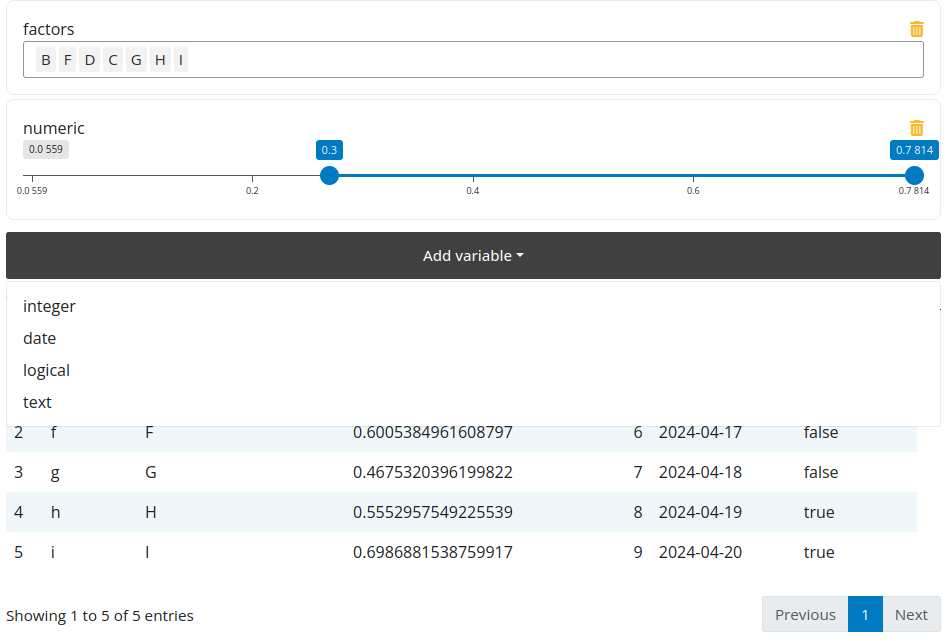

Get Started¶
At its core flexfilter is a shiny module with a UI and server component.
Call flexfilterUI() where you want the filter to be placed in your interface.
And call flexfilter_server() in your server; this will return a reactive containing
either the filtering expression to use with dplyr or a vector of variables that you
want to select from your data.frame.
Flexfilter will create a different input based on the type of the column:
factor: creates a selectize input where multiple values can be selected.character: creates a text input.numericandinteger: creates a range input where a range can be selected.date: creates a date range input.logical: creates a checkbox input.
Note
Note how the expression returned by the flexfilter_server() function is being used below (dplyr::filter(data, !!!values()$exprs))
1 2 3 4 5 6 7 8 9 10 11 12 13 14 15 16 17 18 19 20 21 22 23 24 25 26 27 28 29 30 31 32 33 34 35 | |
